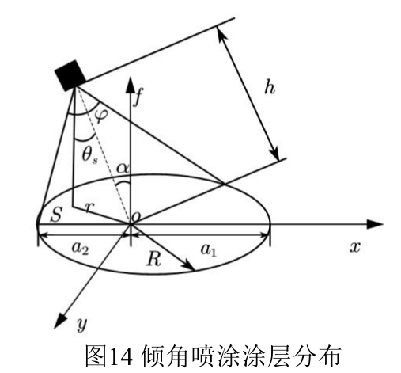
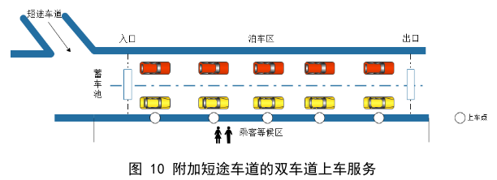
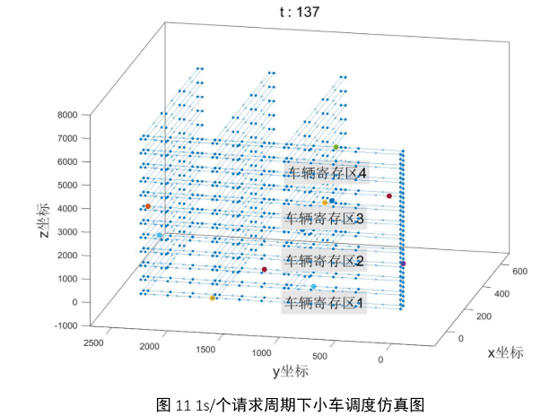
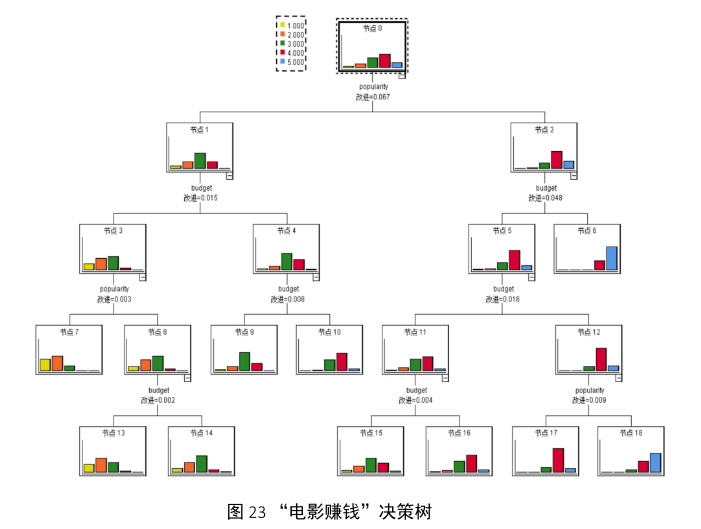
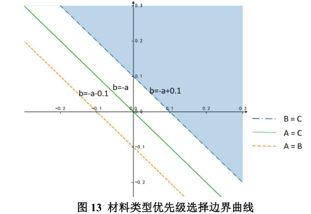

Kaiwen Xue (薛凯文)
 |
B.S. Student, |
About me
Currently I am a third-year B.S. student in the School of Information and Software Engineering, University of Electronic Science and Technology of China.
My research interests include: deep generative modeling,
computer vision, machine learning, mathematical modeling etc. In addition, I love outdoor sports and music. I'm looking to apply to graduate school (PhD program)
Educations
|
|
B. S., University of Electronic Science and Technology of China (UESTC), Chengdu, Sichuan [2019.9 ~ 2022.7]
|
Research Experience
Prior-DiffuSE: Refine Speech with Diffusion Probabilistic Model
Adviser: Instructor: Associate Professor Fan Zhou, UESTC
International Conference on Learning Representations 2023. (manuscript in preparation)

Deep learning-based object detection algorithm for dense crowd point cloud data
Adviser: Associate Professor Deyuan Chen, UCAS
Science and Technology Program for Students of UCAS
Project Experience
Intelligent child monitoring system based on deep learning
 GitHub
GitHub
Responsible person; Innovative entrepreneurial projects for Students of UESTC; First Prize of China Student Computer Design Competition in Sichuan

UNet-based deep-earth object detection algorithm
GitHub
Responsible person; School of Resources and Environment Program, UESTC

Contemporary Undergraduate Mathematical Contest in Modeling
GitHub
Team leader; 2021 First Prize of Sichuan Region of CUMCM
    
Reciter: A simple software to assist in memorizing words
GitHub
Responsible person; C++ Object-Oriented Programming course Project


Awards